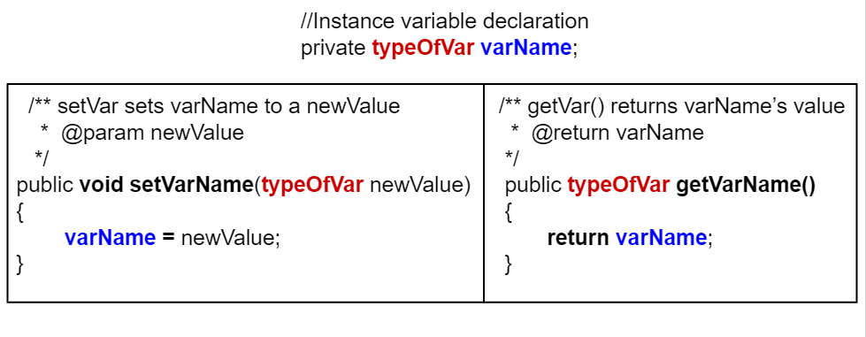
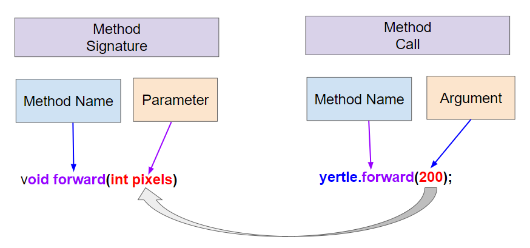

Part 3: Setters and Parameters
In complement to accessor/getter methods, if we want to allow code outside the class to change the value of an instance variable, we provide a mutator method.
Everyone actually calls it a setter.
A setter is a void method with a name that starts with set and takes a single argument of the same type as the instance variable to be set.
The effect of a setter is to assign the provided value to the instance variable.
Just as you should not reflexively write a getter for every instance variable, you should think even harder about whether you want to write a setter.
Not all instance variables are meant to be manipulated directly by code outside the class.
In general, you should not write a setter until you find a real reason to do so.
The Turtle class provides getters getXPos and getYPos, but it does not provide corresponding setters.
There are methods that change a Turtle’s position like forward and moveTo.
They do more than just changing instance variables; they also take care of drawing lines on the screen if the pen is down.
setNameTo call a set method, use objectName.setVar(newValue), for example s.setName("Ayanna");.

Comparison of setters and getters
Getters return an instance variable’s value and have the same return type as this variable and no parameters.
Setters have a void return type and take a new value as a parameter to change the value of the instance variable.
activecode:: StudentObjExample2Try the Student class below, which has had some setters added.
Notice that there is no setId method even though there is a getId.
This is presumably because, while it makes sense for a student to change their name or email, their id should never change.
You need to fix one error.
The main method is in a separate class TesterClass and does not have access to the private instance variables in the Student class.
Change the main method so that it uses a public setter to change the value instead.
public class TesterClass
{
// main method for testing
public static void main(String[] args)
{
Student s1 = new Student("Skyler", "skyler@sky.com", 123456);
System.out.println(s1);
s1.setName("Skyler 2");
// TODO: Main doesn't have access to email, use set method!
s1.email = "skyler2@gmail.com";
System.out.println(s1);
}
}
class Student
{
private String name;
private String email;
private int id;
public Student(String initName, String initEmail, int initId)
{
name = initName;
email = initEmail;
id = initId;
}
// Setters
public void setName(String newName)
{
name = newName;
}
public void setEmail(String newEmail)
{
email = newEmail;
}
// Getters
public String getName()
{
return name;
}
public String getEmail()
{
return email;
}
public int getId()
{
return id;
}
public String toString()
{
return id + ": " + name + ", " + email;
}
}The test checks that the code contains:
Expected output:
The broken line is direct access to a private instance variable: s1.email = "skyler2@gmail.com";
The repair should use the provided public setter: s1.setEmail("skyler2@gmail.com");
mchoice:: setSignatureConsider the class Party, which keeps track of the number of people at the party.
Which method signature could replace the missing header so the method works as intended?
public int getNum(int people)public int setNum()public int setNum(int people)public void setNum(int people)public int setNumOfPeople(int p)public void setNum(int people) matches the method body because:
peopleint, matching numOfPeopleMutator methods do not have to have a name with set in it, although most do.
They can be any methods that change the value of an instance variable in the class.
Most mutator methods are non-void methods.
Mutator methods do not have to have parameters, but they usually do.
The setter methods above contained parameters.
A parameter (参数) is a variable in a method’s header that is used to pass in data that the method needs to do its job.
In a setter, the parameter is the new value that you want to assign to the instance variable.
An argument (实参) is a value that is passed into a method when the method is called.
It is saved into a parameter variable.
The arguments passed to a method must be compatible in number and order with the types identified in the parameter list of the method signature.

Method signatures with parameters and method calls arguments
When calling methods, arguments are passed using call by value.
Call by value initializes the parameters with copies of the arguments.
When an argument is a primitive value, the parameter is initialized with a copy of that value.
Changes to the parameter have no effect on the corresponding argument.
Not all methods that return values are accessor/get methods.
Some methods have parameters and return values that are found or calculated in a more complex algorithm.
The following method uses a loop to find a letter in a text string given as a parameter.
activecode:: StringFindRun the program, which contains a method called findLetter.
It takes a letter and a text as parameters and uses a loop to see if that letter is in the text.
It returns true if the letter is found and false otherwise.
Then change the code of the findLetter method to return how many times it finds letter in text, using a new variable called count.
How would the return type change?
public class StringFind
{
/**
* findLetter looks for a letter in a String
*
* @param String letter to look for
* @param String text to look in
* @return boolean true if letter is in text TODO: After running the code, change
* this method to return an int count of how many times letter is in the
* text.
*/
public boolean findLetter(String letter, String text)
{
boolean flag = false;
for (int i = 0; i < text.length(); i++)
{
if (text.substring(i, i + 1).equalsIgnoreCase(letter))
{
flag = true;
}
}
return flag;
}
public static void main(String args[])
{
StringFind test = new StringFind();
String message = "Apples and Oranges";
String letter = "p";
System.out.println("Does " + message + " contain a " + letter + "?");
System.out.println(test.findLetter(letter, message));
}
}The tests expect:
findLetter("p", "Apples and Oranges") returns 2findLetter("s", "Test strings") returns 3public int findLetter(String letter, String text)int count = 0;count++, count = count + 1, count += 1, or ++countvoid return type and a matching parameterStringFind starter and convert it to a counting method only after the task promptNext: Class Pet Challenge.